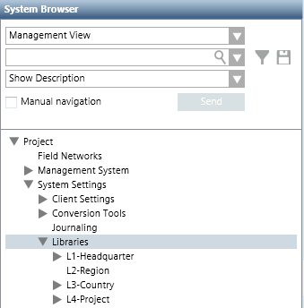
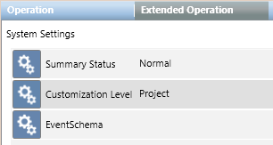

Libraries Structure and Customization Levels
All the libraries available in Desigo CC are located under Project > System Settings > Libraries in Management View.

Each library in the system is a collection of data related to specific system objects that are organized in specific customization levels:
- L1-Headquarter
Libraries protected by a specific license and supporting the core set of data. - L2-Region
Libraries protected by a specific license and supporting international customizations and extensions. - L3-Country
Libraries protected by a specific license and supporting regional customizations and extensions. - L4-Project
Libraries protected by standard Desigo CC security and used for different customer-specific solutions.

Desigo CC basic libraries (for example, Global) are included under the L1-Headquarter level. These libraries are available with installation and do not require any changes.
Headquarter libraries can be modified by Headquarter experts and Customer Support only.
Headquarter experts and Customer Support can handle any type of library. Other authorized experts (Region librarians, Country librarians, or Project engineers) can handle only the libraries for the allowed customization level. For details, see Customization Levels, below.
Libraries Structure
The following list describes Desigo CC library levels and objects.
Level | Description |
L1-Headquarter L2-Region L3-Country L4-Project | Any of the four main library levels, each one containing library folders organized by disciplines. These levels are fixed and pre-defined in Desigo CC and cannot be deleted. Depending on the customization level, authorized experts can manage discipline-specific libraries. |
Library folder | Any of the discipline-specific library sub-levels (for example, GlobalorCommon) that contain library objects. Each library folder is always located under the relevant main library level. Authorized experts can delete these folders. |
Library object | Any system-specific library objects (for example, BaseorEvents) that contain library blocks. Each library object is always located under the relevant library folder. Depending on the customization level, authorized experts can manage library objects or customize libraries. |
Library block | Any container for one type only of library element (for example, Icons). Depending on the customization level, authorized experts can manage library blocks or customize a limited set of library blocks. |
Customization Levels
Basic system libraries (such as L1-Headquarter > Global > Base) are provided with the installation. Additional libraries can be imported, created, or edited. How experts can work with libraries depends on the customization level that indicates what type of libraries authorized experts can customize (L1-Headquarter, L2-Region, L3-Country, or L4-Project).
The customization level displays in the Extended Operation tab when you select System Settings in Management View of System Browser. For instructions, see Determining the Allowed Customization Level.

The Customization Level is set to Project and you cannot change it.
If it is necessary to work with a customization level different from Project, contact Customer Support that is authorized to modify this setting.
For the allowed customization level, authorized experts can:
- Edit libraries according to the following schema.
Experts | Tasks |
Headquarter experts | Edit libraries belonging to any level (L1-Headquarter, L2-Region, L3-Country, or L4-Project) |
Customer Support | |
Region librarians | Edit libraries belonging to the L2-Region, L3-Country, or L4-Project level only. |
Country librarians | Edit libraries belonging to the L3-Country or L4-Project level only. |
Project engineers | Edit libraries belonging to the L4-Project level only. |
- Customize libraries (create new libraries by cloning the structure of a library from a higher to a lower library level) to better meet the customer’s needs, according to the following schema.
Customization Level | Task |
Project | Customize L1-Headquarter, L2-Region, or L3-Country libraries under the L4-Project level. |
Country | Customize L1-Headquarter or L2-Region libraries under the L3-Country level. |
Region | Customize only L1-Headquarter libraries under the L2-Region level. |
Headquarter | N/A |
Navigation Through Customized Libraries
When you click any customized library-related item contained in the Extended Related Items tab, the Secondary pane opens, displaying the Library Configurator with the settings for the selected related item. This workflow can be helpful for example to compare libraries data across customizations. It is also possible to customize the library displayed in the Secondary pane.